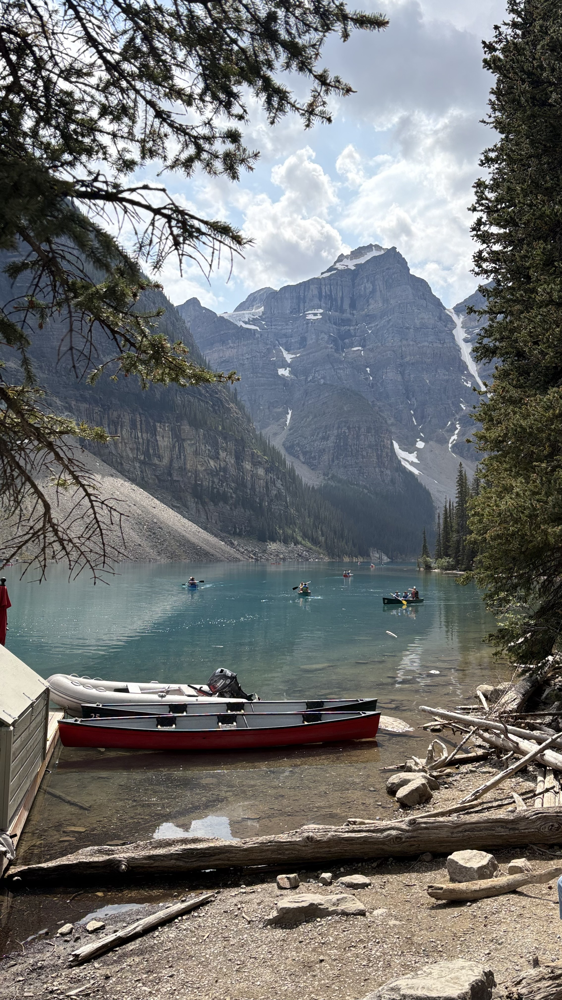
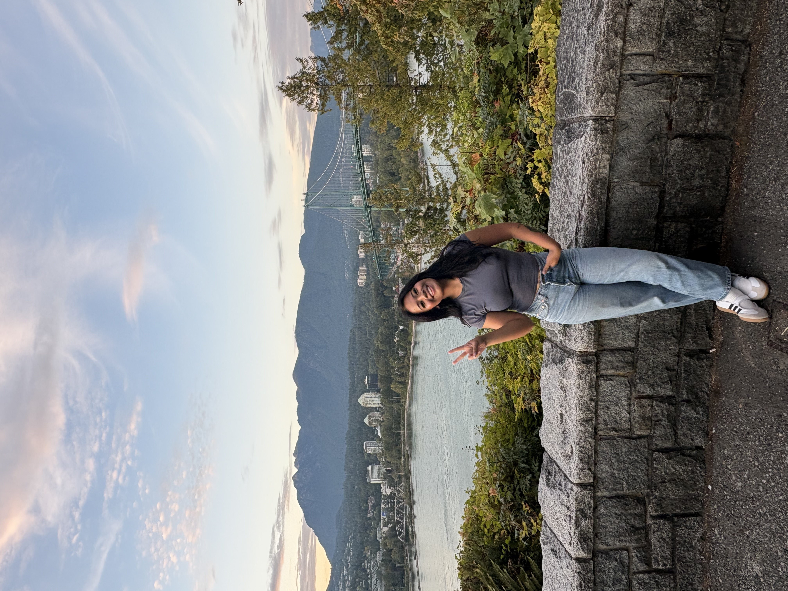
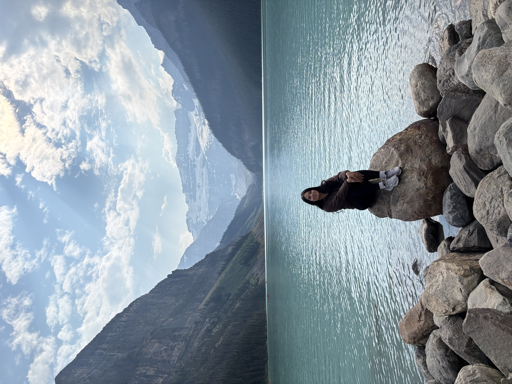

My Travel Destinations
Traveling is one of my favorite things to do. Here are some of my favorite places I've visited and memories from each trip.
Banff, Alberta

This was one of the prettiest lakes I have ever seen. One thing I really appreciated about Canada was how much respect people seemed to have for their parks. Even though it was crowded, the area was incredibly clean and peaceful. People weren't making a lot of noise and instead seemed to just enjoy the scenery around them.
This was definitely one of those places where I loved every moment of hiking. The fresh weather and turquoise water kept pushing me to walk for miles just to see more. Being surrounded by the mountains, trees, and water made me appreciate God's creation even more.
Vancouver & Stanley Park

Vancouver felt like such an active city. Coming from Los Angeles, I thought we were pretty active too, but Vancouver felt completely different. I saw so many people walking and biking, and it seemed like there were fewer cars around compared to LA.
I was able to ride an electric scooter and bike around like the locals, which helped me see and appreciate more of the city. We visited tourist spots like Granville Island Public Market, but Stanley Park was still one of my favorite places. I loved that such a beautiful and clean park could exist right inside a major city.
What stood out to me most was how respectful people were of the shared spaces around them. I also appreciated being able to enjoy so many public spaces without constantly paying an entrance fee. From the environment to the people, Vancouver made me appreciate how much a city can offer when people take care of the places they share.
My First Time Seeing Glaciers

Visiting Lake Louise was also the first time I had ever seen glaciers in person. I had only seen places like this in pictures, so actually standing there and seeing the mountains, glaciers, and turquoise water together was such a memorable experience.
I also learned more about the history of the area during the trip, including how some of the surrounding landmarks were named after royalty and how mountains and other natural landmarks were important reference points for early explorers. I thought that was really interesting because it made me look at the landscape as more than just a beautiful view.
It was such a great feeling to simply hike, enjoy the fresh air, and take in everything around me. This was easily one of my favorite moments from the entire trip.